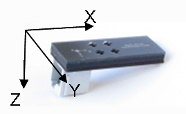
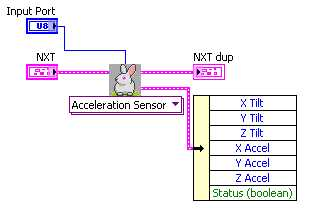

Acceleration Sensor Dual
Tilt values:
The tilt values range between
-127 to + 127, where 0 value indicates
level. The tilt values on a stationary sensor will generally range
between -70 to +70.
The sensor would show values closer to +127 or -127 when sensor is
accelerating or decelerating with high acceleration forces.
Acceleration values:
The acceleration values are
returned in milli-G. A stationary sensor
will report component of gravitational acceleration acting on that
axis.
(The axis pointing towards center of earth will show 1000
milli-G).
The directions of axes are as shown below:



Inputs
Input Port
- This is where you input the Input
Port your Acceleration
Sensor is
attached to.
Outputs
Output of Acceleration Sensor (Cluster) includes...
X Tilt-returns X Tilt value
Y Tilt-returns Y Tilt value
Z Tilt-returns Z Tilt value
X Accel-returns X accelertation value
Y Accel-returns Y accelertation value
Z Accel-returns Z accelertation value
Sample Program

Sample located at
..\mindsesnors.com
LVEE\mindsensors.com Sample Programs\Acceleration
Sensor-SP\Acceleration Sensor-Dual
Discuss Your Ideas>>